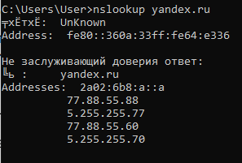

nslookup (англ. name server lookup поиск на сервере имён) — утилита, предоставляющая пользователю интерфейс командной строки для обращения к системе DNS (проще говоря, DNS-клиент). Позволяет задавать различные типы запросов и опрашивать произвольно указываемые сервера. Её аналогом являются утилиты host и dig. Разработана в составе пакета BIND (для UNIX-систем).
Утилита портирована на Windows непосредственно фирмой Microsoft и поставляется вместе с операционной системой.
